ActionMaps
ActionMaps:ActionFilter
This flow node can enable/disable existing filters.
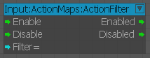
In this example, we are enabling the already defined "cutscene" filter.
Input | Description |
|---|---|
Any "Enable" | Enable the specified filter. |
Any "Disable" | Disable the specified filter. |
String "Filter" | Specifies the filter you want to enable/disable. |
Output | Description |
Any "Enabled" | Forwards the flow when the ActionFilter was successfully enabled. |
Any "Disabled" | Forwards the flow when the ActionFilter was successfully disabled. |
ActionMaps:ActionListener
This flow node will allow you to listen to certain actions that got forwarded to the specified entity.
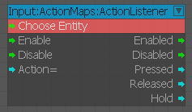
In the example above, we start listening to the "jump" action for the local player. If there is no entity specified, the node will listen to all events that match the pattern.
Input | Description |
|---|---|
EntityId "entityId" | Specifiy the entity you want to listen to. If no entity is specified, it will listen to all events that match the pattern. |
Any "Enable" | Enables the listener. |
Any "Disable" | Disable the listener. |
String "Action" | Pick your favored action from one of the action maps. |
Output | Description |
Any "Enabled" | Forwards the flow when the ActionListener was successfully set to the specified action. |
Any "Disabled" | Forwards the flow when the ActionListener was successfully removed. |
ActionMaps:ActionMap
This flow node will allow you to enable/disable action maps during runtime
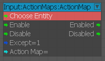
In the example above, we're enabling the "player" action map for the local player.
Input | Description |
|---|---|
EntityId "entityId" | Specify which entity should be assigned to this action map. If no entity is specified, it will try to assign it to the default action entity. If there is no such entity set, it won't assign it at all and just executes the enable/disable command on it. |
Any "Enable" | Enables the selected action map and assigns the specified entity to it. |
Any "Disable" | Disables the selected action map. |
Boolean "Except" | If this is set to "true", it will disable all other action maps in place. |
String "ActionMap" | Pick your action map here from the list. |
Output | Description |
Any "Enabled" | Forwards the flow when the specified action map got successfully enabled. |
Any "Disabled" | Forwards the flow when the specified action map got successfully disabled. |
ActionMaps:ActionMapManager
This flow node will allow you to enable/disable the whole action map manager system
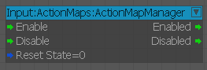
In the example above, we're enabling the "player" action map for the local player.
Input | Description |
|---|---|
Any "Enable" | Enables the Action Map Manager. |
Any "Disable" | Disables the Action Map Manager. |
Boolean "ResetState" | If this is set to "true", it will reset all states in the manager on disabling. |
Output | Description |
Any "Enabled" | Forwards the flow when the manager got successfully enabled. |
Any "Disabled" | Forwards the flow when the manager got successfully disabled. |
ActionMaps:GetDefaultActionEntity
This flow node will allow you to get the current default action entity set
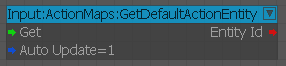
In the example above, we're getting the current default action entity and with AutoUpdate set to 1, we subscribe to updates on it
Input | Description |
|---|---|
Any "Get" | Gets the current default action entity. |
Boolean "AutoUpdate" | If set to "true", it will output the new entity Id whenever it got changed. |
Output | Description |
EntityId "EntityId" | Outputs the current entityId of the default action entity. |
ActionMaps:SetDefaultActionEntity
This flow node will allow you to set the current default action entity
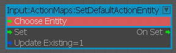
In the example above, we're setting the local player to be the current default action entity
Input | Description |
|---|---|
EntityId "entityId" | Specifies the entity that will become the new default action entity. |
Any "Set" | Sets the specified entity to be the new default action entity. |
Boolean "UpdateExisting" | If this is set to "true", it will update all existing action map assignments. |
Output | Description |
Any "OnSet" | Forwards the flow when the default action entity got set. |
Input:GrammerManagement
Enables/Disables the selected Grammar for Kinect Speech Recognition (Xbox One).
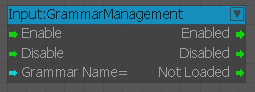
Input:MouseButtonInfo
Used to output mouse button state information.
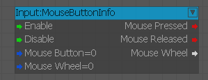
Inputs
| Port | Type | Description |
|---|---|---|
| Enable | Any | Enables the node |
| Disable | Any | Disables the node |
| MouseButton | Boolean | Mouse button state information |
| MouseWheel | Boolean | Mouse wheel state information |
Outputs
| Port | Type | Description |
|---|---|---|
| MousePressed | Integer | Outputs the mouse button that was pressed |
| MouseReleased | Integer | Outputs the mouse button that was released |
| MouseWheel | Float | Outputs a positive value when the mouse wheel is moved up and a negative value when moved down |
Input:MouseCoords
Used to output mouse coordinates.
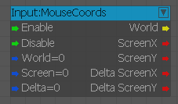
Inputs
| Port | Type | Description |
|---|---|---|
| Enable | Any | Enables the node |
| Disable | Any | Disables the node |
| World | Boolean | World coordinates used |
| Screen | Boolean | Screen coordinates of the mouse cursor |
| Delta | Boolean | Shows the number of screen pixels the mouse cursor has moved |
Outputs
| Port | Type | Description |
|---|---|---|
| World | Vec3 | World coordinates of the mouse cursor |
| ScreenX | Integer | X-axis coordinate of mouse cursor |
| ScreenY | Integer | Y-axis coordinate of mouse cursor |
| DeltaScreenX | Integer | X-axis delta coordinate of mouse cursor |
| DeltaScreenY | Integer | Y-axis delta coordinate of mouse cursor |
Input:MouseCursor
Used to show or hide the mouse cursor.
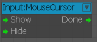
Inputs
| Port | Type | Description |
|---|---|---|
| Show | Any | Shows the mouse cursor |
| Hide | Any | Hides the mouse cursor |
Outputs
| Port | Type | Description |
|---|---|---|
| Done | Any | Triggers when the action is complete |
Input:MouseEntitiesInBox
Used to show or hide the mouse coordinates.
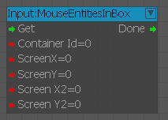
Inputs
| Port | Type | Description |
|---|---|---|
| Get | Any | Get the mouse cursor |
| ContainerId | Integer | ID of the container that stores the entities |
| ScreenX | Integer | X-axis screen position of the mouse cursor |
| ScreenY | Integer | Y-axis screen position of the mouse cursor |
| ScreenX2 | Integer | X-axis screen position 2 of the mouse cursor |
| ScreenY2 | Integer | Y-axis screen position 2 of the mouse cursor |
Outputs
| Port | Type | Description |
|---|---|---|
| Done | Any | Triggers when completed |
Input:MouseRayCast
Used to output the mouse raycast information.
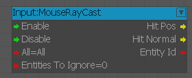
Inputs
| Port | Type | Description |
|---|---|---|
| Enable | Any | Enables the node |
| Disable | Any | Disables the node |
| All | Integer | Raycast filter type |
| EntitiesToIgnore | Integer | Entities to ignore during raycast |
| IgnoreBackFaces | Boolean | Ignore backfaces of geometry during raycast |
Outputs
| Port | Type | Description |
|---|---|---|
| HitPos | Vec3 | Coordinates of the first position that was hit with the raycast |
| HitNormal | Vec3 | Normal of the first position that was hit with the raycast |
| EntityId | Any | ID of the entity that was hit by the raycast |
| NoHit | Any | Activated each frame when enabled and no item was hit by the raycast |
Input:SpeechRecognition
Enables/Disables Kinect Speech Recognition (Xbox One).
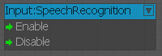
Input:SpeechRecognitionEnabled
Queries the availability of Kinect Speech Recognition and its grammars (Xbox One).
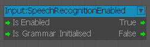
Input:SpeechRecognitionListener
Listener for Kinect Voice Commands (Xbox One).
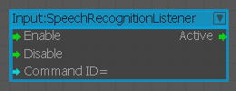